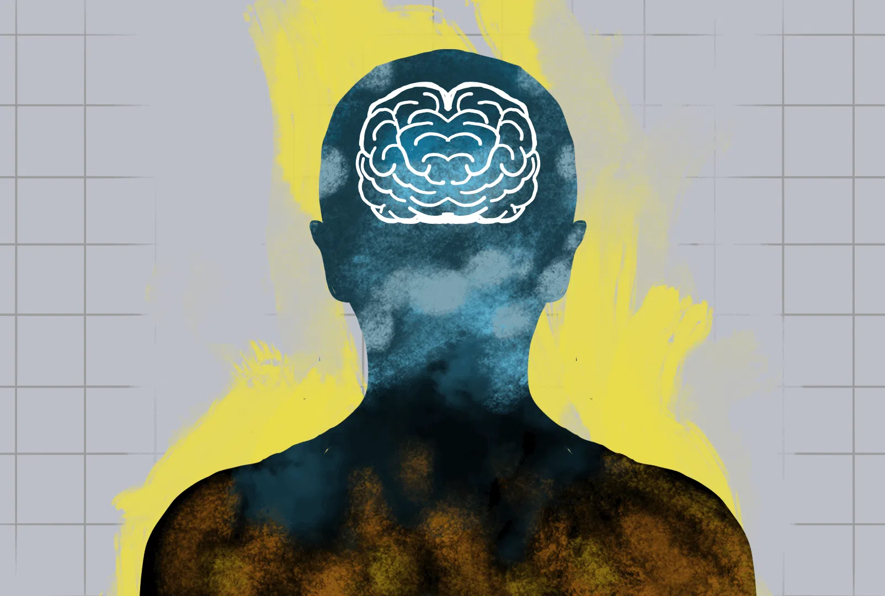

This section explores my philosophical beliefs, values, and the fundamental principles that guide my thinking.
Based on our discussion about the Philosophical Self, as well as the theories of some philosphers. The theory that sticked with me the most is Socrates' "Know Thyself." His theory was all about believing that self-knowledge is the key to understanding the world and living a good life. This really sticked with me because personally, I think that by understanding ourselves better, we can make better decisions, have healthier realationships with other persons, and find more meaning in our lives. This is like, if we don't know who we really are, what we value in life, and what our strenghts and weaknesses are, we might end up living a life that doesn't fit who we really are.
